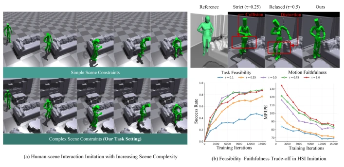
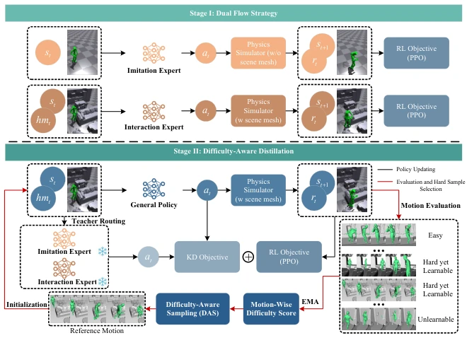
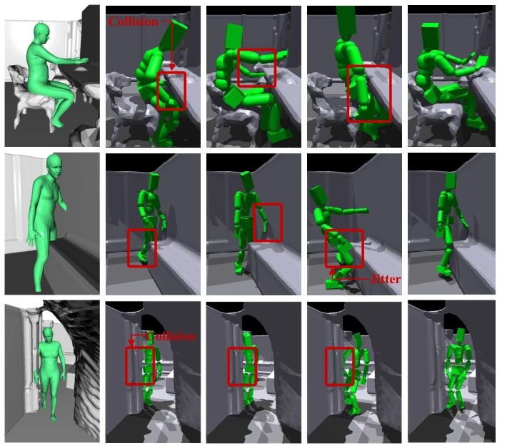
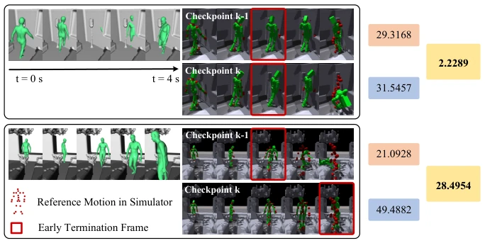
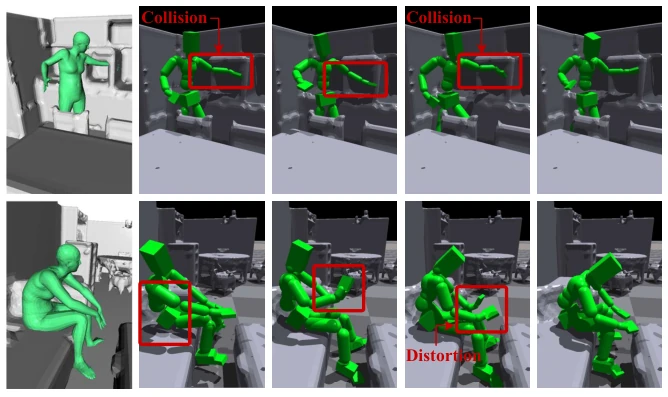
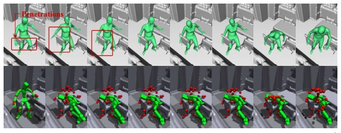

This paper attempts to address a cliché yet thorny pain point in embodied AI: enabling virtual humans to "walk decently without hitting walls" in complex scenes. The authors did not adopt fancy large models, but rather used a "dual expert + distillation" approach, separating the training of "looks like" and "can do". Although the logic is clear, essentially it remains the core practice of reinforcement learning, just refining the reward function and sampling strategies more meticulously. ComplexMimic indeed topped the leaderboard on TRUMANS, with improvements in both success rate and accuracy, but the computational overhead and training complexity brought by the dual expert architecture are also significant. For the industry pursuing ultimate efficiency, this "divide and conquer" then distillation pipeline may seem slightly cumbersome, but for academic benchmarks, this is indeed a solid incremental contribution. After all, avoiding clipping in a room full of furniture is much harder than running a marathon in an open field.
Existing physics-driven humanoid imitation learning mostly works in simplified scenarios, such as MimicBench [20] which contains only single objects and few tasks, unable to cope with the cluttered geometric constraints of the real world. Methods such as DeepMimic [27] and PHC [22] perform well in motion control, but often face a "feasibility-fidelity" trade-off dilemma in complex scenes: relaxing constraints avoids collisions but distorts actions, while strict constraints easily lead to task failure due to collisions. This trade-off limits the deployment of HSI in real-world scenarios. This paper aims to fill this gap, systematically solving the HSI imitation problem in complex 3D environments, no longer limited to open fields or simple objects, but facing the frequent collisions and instability challenges brought by dense geometry.

Fig. 1: (a) Prior humanoid imitation-learning studies [20] typically focus on scene- free or overly simplified environments (upper row), whereas our work targets realistic HSI imitation in complex 3D scenes (lower row). (b) Feasibility–faithfulness trade-off in HSI imitation. Varying the early termination threshold τ during training reveals a clear trade-off: larger τ improves task feasibility (higher success rate) but reduces motion fidelity (higher MPJPE), while smaller τ enforces faithful motion at the cost of task success.
The overall framework is divided into two stages. The first stage Dual Flow Strategy trains two complementary experts: Imitation Expert pursues high fidelity with strict thresholds without scene constraints; Interaction Expert perceives the environment with relaxed thresholds and height maps under scene constraints to ensure feasibility. The second stage Difficulty-Aware Distillation (DAD) distills knowledge from both into a single student policy. DAD includes three innovations: first is regime-specialized teacher routing, assigning samples to the most suitable expert based on motion difficulty to avoid gradient interference; second is multi-teacher KD objective, combining PPO for joint optimization; third is difficulty-aware sampling, utilizing online failure statistics and learning progress signals (return improvement) to prioritize sampling "hard but learnable" trajectories, avoiding wasting compute on unlearnable samples.

Fig. 2: Overview of ComplexMimic, a two-stage framework for human–scene inter- action imitation in complex environments. In Stage I, an imitation expert and an interaction expert are trained to achieve motion-faithful tracking and collision-aware adaptation, respectively. In Stage II, these experts are frozen and distilled into a unified policy via Difficulty-Aware Distillation (DAD). Black arrows denote policy updates; red arrows represent evaluation and hard-sample selection.
Validated on three datasets: TRUMANS [16], LINGO [15], and GIMO [53]. Baselines include DeepMimic [27], AMP [29], PHC [22], MaskedMimic [36]. Metrics cover success rate (Succ), MPJPE, etc. Results show ComplexMimic improved Succ by 3.90% and reduced Eg-mpjpe by 9.36% on TRUMANS, outperforming MaskedMimic. Zero-shot transfer to real scanned data GIMO also showed robust performance. Ablation studies show that removing either expert or DAD components (such as intra-group sampling, learnability filtering) leads to performance degradation, proving the effectiveness of dual expert complementarity and hard sample mining.

Fig. 4: Qualitative comparisons on the TRUMANS [16] dataset. Red boxes highlight typical failure modes under complicated scenes, such as undesired collisions, unstable contacts, and noticeable deviations from the reference. More visual results can be found in the supplementary material.
其他图片Other Figures

Fig. 3: Examples of return improvement under different motion cases. The first refer- ence motion conflicts heavily with the scene meshes, resulting in limited return gains. In contrast, the second motion achieves better tracking performance and larger return gains, demonstrating the effectiveness of our learning progress signal.

Fig. 5: Qualitative ablation comparisons on TRUMANS [16].

Fig. 8: Examples of failure cases. The reference motion is severely penetrated with the 3D environments.